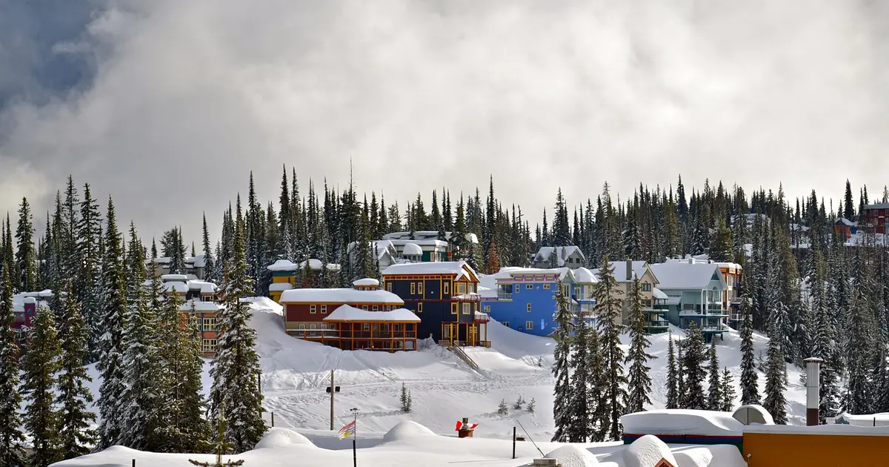

Bulletins neige · Ouest canadien
Ouest canadien: Whistler Blackcomb est en retard à 1 456 m : seulement 31 cm aujourd'hui, sous les 109 cm habituels. Seuls 0 des 46 hivers passés en …
Mount Washington Alpine Resort, bulletin neige : 104 cm tout en haut (Ouest canadien, 18 novembre)

Whistler Blackcomb est en retard à 1 456 m : seulement 31 cm aujourd'hui, sous les 109 cm habituels. Seuls 0 des 46 hivers passés en avaient moins un 18 novembre. Pour trouver le plus de neige dans l'Ouest canadien aujourd'hui, regardez Whistler Blackcomb (Canada) : environ 136 cm en altitude. Ensuite viennent Mount Washington Alpine Resort (104 cm) et Big White (101 cm). Aujourd'hui, 46 des 57 stations dans l'Ouest canadien ont de la neige sur le haut du domaine ; au total, notre modèle compte 322 740 km² sous la neige. Une neige épaisse sur une face nord et un sol nu sur le versant sud de la même crête, c'est normal en montagne sèche.
Ce qu'il y a au sol
La surface blanche a changé : 278 460 km² le 16 novembre, 322 740 km² aujourd'hui, et 317 430 km² attendus le 21 novembre.
À Whistler Blackcomb, l'écart entre le haut et le bas est net : 102 cm au sommet (2 259 m), 49 cm à mi-pente (1 456 m) et 0 cm en bas (653 m).

Mount Washington Alpine Resort, bulletin neige : 104 cm tout en haut (Ouest canadien, 18 novembre). À 1 456 m à Whistler Blackcomb, la saison est en …

Le niveau de congélation atteint 1 500 m à Banff Sunshine Village le 19 novembre. De la neige fraîche est tombée dans tout l'ouest du Canada au cours des 72 dernières heures, mais la pluie menace la poudreuse nouvelle.

Prévisions Canada occidental : 90 cm de neige nouvelle à Mount Washington au cours des deux prochaines semaines, avec 70 cm attendus fin novembre et début décembre. Modèle du 18-11-2026.

Y a-t-il plus de neige qu'il y a un an ? Nous avons comparé aujourd'hui avec le 15 novembre de l'hiver dernier dans 4 stations dans l'Ouest canadien …

La zone blanche sur la carte est passée de 258 160 km² (13 novembre) à 253 880 km² aujourd'hui, et la prévision dit 298 900 km² le 18 novembre. Trois …

La réserve de neige se remplit-elle comme d'habitude ? Nous avons comparé la neige du jour dans 5 stations dans l'Ouest canadien avec la même date …

Revelstoke, prévisions neige : jusqu'à 10–21 cm attendus d'ici le 16 novembre (Ouest canadien). À Whistler Blackcomb, l'isotherme 0 °C monte entre …

Entre 1 380 m et 3 410 m : c'est là que notre prévision place l'isotherme 0 °C dans l'Ouest canadien ces prochains jours. Aux heures les plus douces, …

Whistler Blackcomb, 116 cm de neige : la hauteur du jour en haut du domaine (12 novembre). 162 cm : c'est la neige en haut du domaine de Mount …


Comment se déroule d'habitude une journée de neige à Whitewater, près de Nelson, de la météo du matin à la dernière descente, avec la neige de 46 hivers passés à trois altitudes.

Whistler Blackcomb pour tous les niveaux, avec notre historique : environ 370 cm au pic habituel à mi-pente sur 46 hivers passés, mars et avril les plus enneigés.

Skier à Lake Louise en début de saison : pourquoi la station démarre tôt, à quoi ressemble d'habitude la neige de novembre et décembre sur 46 hivers passés, et comment skier une neige encore mince.

Skiez d'abord en pensée tout le dénivelé de Revelstoke : la neige au sommet, à mi-pente et en bas dans la vallée sur 46 hivers passés, et quand chaque partie est au mieux.

Banff Sunshine Village mois par mois : environ 100 cm à mi-pente en mars d'un hiver habituel sur 46 hivers passés, avril le plus enneigé en haut, saison jusqu'à fin mai.

Mount Washington retient 145 cm le 8 novembre, le plus profond de l'Ouest canadien, mais le niveau de congélation montera au-dessus du sommet d'ici le 11 novembre.
Whistler Blackcomb a reçu 100 cm de poudreuse en 72 heures jusqu'au 8 novembre, mais elle est tombée de manière inégale : 96 cm au sommet, rien à la base.



C'est à Silver Star qu'il y a le plus de neige dans l'Ouest canadien : environ 112 cm sur le haut du domaine, selon notre modèle de neige. Viennent …

D'ici le 8 novembre, notre prévision donne 94 cm à Whistler Blackcomb, 93 cm à Ski Callaghan et 70 cm à Tweedsmuir Ski Club. Les chiffres des …